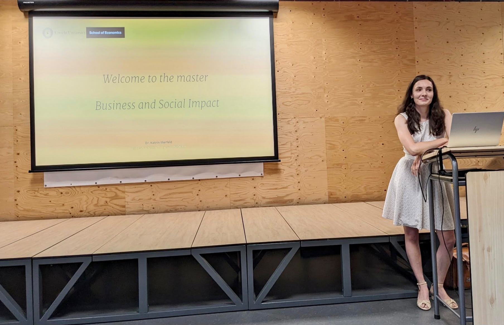

DR. / ASSOCIATE PROFESSOR
Katrin
Merfeld.
What moves people.
What moves society.
Curiosity
with a purpose.
How can marketing help us imagine—and make—better futures?
At Utrecht University School of Economics, I study how people respond to sustainability challenges, and how marketing can support meaningful change. My work connects consumer behaviour with new business models and ways of living and consuming.
Much of my research starts where disciplines meet: in the relationship between urban nature and communities, in the possibilities and tensions of the sharing economy, and in the stories that shape sustainable behaviour.
Working with researchers and practitioners across sectors, I look for insights that can travel beyond the page.
OFFICIAL UTRECHT PROFILEA map of
possibility.
Three strands of work, connected by an interest in how people and organisations can make sustainable choices easier to imagine and act on.
Nature & cities
How people value urban nature—and how communication and business models can help nature-based solutions take root.
Sharing & mobility
Why people join sharing systems, travel differently, and adopt new services that use resources more thoughtfully.
Consumption & change
How technology, marketing, and alternative modes of consumption influence more sustainable behaviour.
Ideas that
step outside
the page.
Collaborative projects connect new evidence with people and places where it matters.
Understanding and communicating the value of nature-based solutions in cities.
URBAN NATURE · COMMUNITIES 02 / WATER4ALL ↗ClimEx-PEExploring nature-based responses to climate extremes and public engagement.
CLIMATE · WATER · SOCIETY 03 / FAIR TRADE ↗World ShopsResearch with German fair-trade shops on purpose, participation, and change.
ALTERNATIVE CONSUMPTIONAn evolving
conversation.
A selection of recent work across marketing, social impact, and sustainable systems.
A typology and research agenda for how smart technologies shape the retail experience.
READ PAPER ↗
Learning
by doing.
I bring questions from research into the classroom—and classroom perspectives back into research.
Marketing perspectives for creating sustainable impact.
Platforms, business models, and their implications for society.
Programme coordination and interdisciplinary learning.